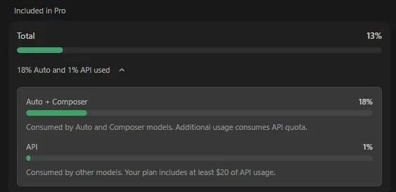

Cutting token costs in Cursor and Claude Code
Originally posted on LinkedIn, April 19, 2026.
Cursor and Claude Code token bills drop when you isolate chats, reuse context with @past, and supervise with cheaper models.
Heavy AI IDE use adds up—a friend burned 13% of Cursor Pro in one day. Cut costs by starting fresh chats per topic, using @past to pull prior context without dragging full history, and running an expensive model as supervisor over cheaper subagents while managing context windows and monitoring usage. These habits apply to Cursor and Claude Code for individuals and organizations.
A friend upgraded to Cursor Pro and used 13% of his subscription in a single day. That prompted me to write down the methods I use to reduce AI development costs and save tokens in both Cursor and Claude Code.
Whether you pay out of pocket or work inside an organization, cost becomes a concern as soon as you adopt these tools.
Cursor
Cursor handles a lot of the work for you, but there are still several ways to control usage:
- Start a new conversation whenever you begin a new topic. If you need the content from an existing conversation but want to reduce the context size, which affects token costs, open a new conversation and ask Cursor to read the previous one using
@pastand selecting the conversation.
- Better models are more expensive. One way I save money is by asking the main model to run subagents on a cheaper model and supervise them. I even have a rule for it:
Spawn subagents and use composer-2 for the work it can do, and supervise it. For larger tasks, I sometimes add:then critic it and run subagent to fix. This gives me more speed because agents can run in parallel, assigns work to the right model based on cost, and can fix code before I have even reviewed it.
- Choosing the right model for each task is a skill that takes practice. Two shortcuts I use constantly sit next to each other on the keyboard:
Cmd+/andCmd+.. One changes the model, and the other changes the mode betweenplan,agent, andask.
I rotate between three models: composer-2, sonnet 4.6, and opus 4.6. I use composer-2 for many tasks as long as they are not complicated. For work that requires deeper reasoning or for Debug, I switch to the smarter models.
I do not use Auto. I do not know what happens behind it, and I want control over the model doing my work.
If you work in an organization with an enterprise account where everyone draws from the same shared budget, I released an open-source project for tracking and monitoring company spending and receiving cost alerts.
Claude Code
First, install claude code statusline so you can see how much context is currently in use. When it starts growing, either open a new conversation or run /compact. You can add a sentence explaining what must be kept and what can be dropped, or let it decide.
There are also tools that can help:
- RTK is a proxy that saves tokens and mainly works with Claude Code. Cursor already handles this itself.
- Caveman reduces responses and content to basic “caveman” language, cutting the amount of text, and therefore tokens, accumulated during a conversation. The tradeoff is shorter answers and fewer explanations.
We have moved past simply adopting the technology. Now the work is about using it efficiently and controlling costs. Every action costs money, so we cannot keep the accelerator pressed all day and burn through the entire tank. We need to manage a finite budget and optimize how we use it.

FAQ
- Why start a new chat for each topic in Cursor or Claude Code?
- Carrying entire conversation history inflates token use. New chats per topic avoid paying repeatedly for unrelated context.
- What does @past do for token savings?
- @past lets you reference earlier context without keeping the full prior thread in the active window, reducing tokens while retaining needed facts.
- How can teams use model tiers to save money?
- Run a more expensive model as a supervisor that delegates work to cheaper subagents, so most tokens spend on lower-cost models while keeping quality checks on hard steps.